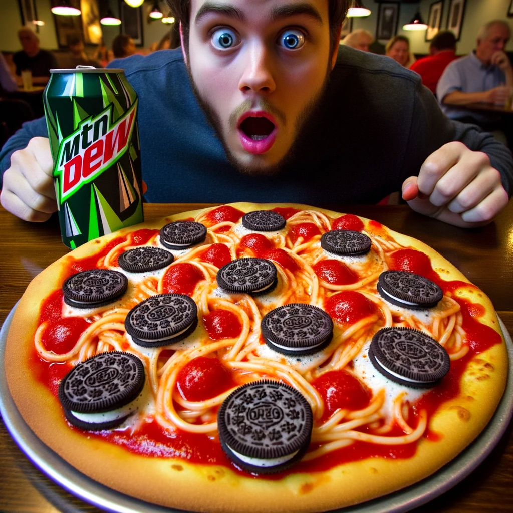
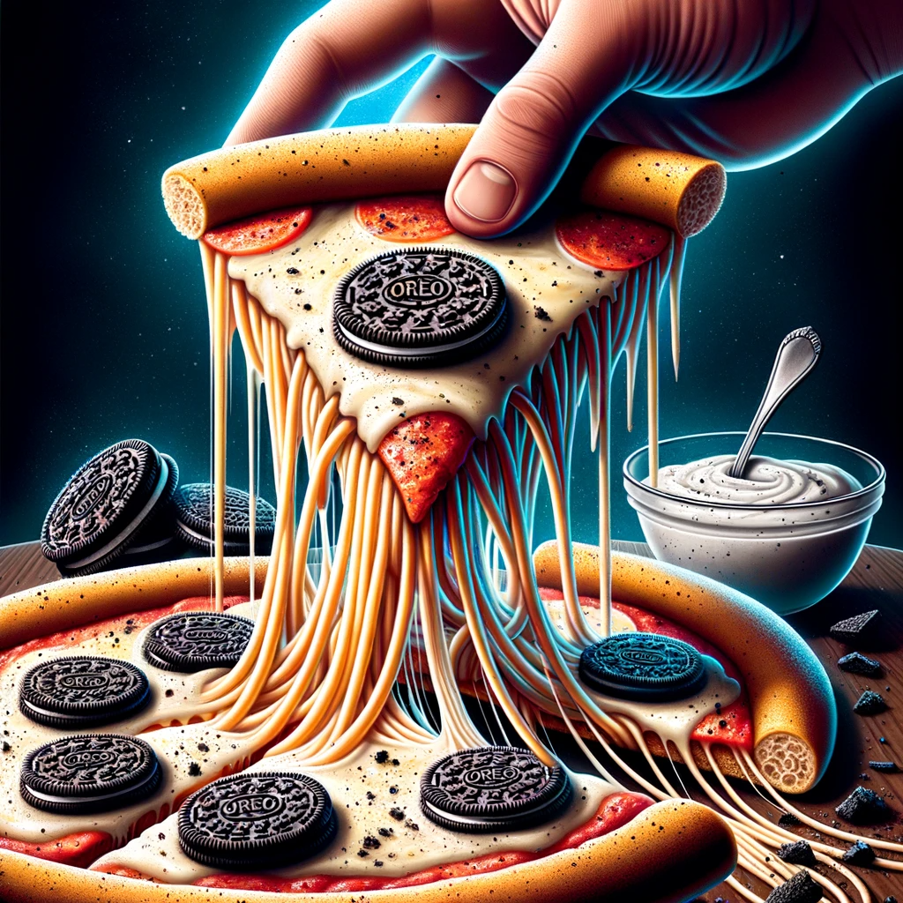
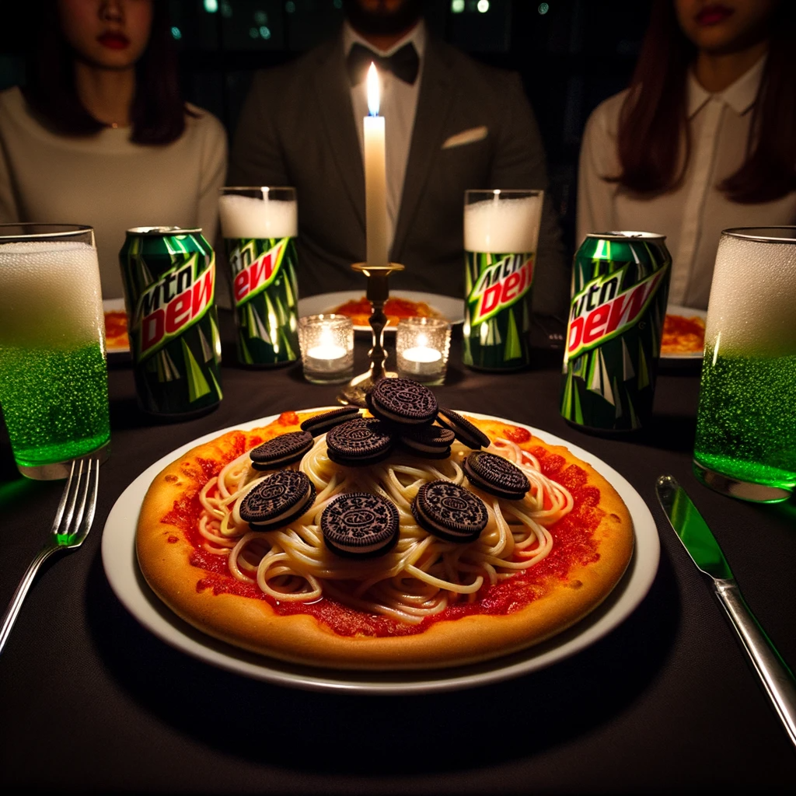

The Spaghetti-Oreo Pizza with Mountain Dew Reduction!
What gives?
In a world where avocado toast is passé and pineapple on pizza is so last decade, enter the latest gastronomic trendsetter: The Spaghetti-Oreo-Pizza. Crafted with the precision of a child left unsupervised in the kitchen, this dish tantalizingly marries canned pasta charm with the sweet embrace of America's favorite cookie. But wait, there's more! The pièce de résistance is the drizzle of artisanal Mountain Dew reduction, evoking fond memories of late-night gaming marathons. Truly, a dish for those with an unparalleled palate... or just a wicked sense of humor. #EatItToBelieveIt! 🍕🍪🥤
See it for yourself:



Ingredients
For the Pizza Base:
- Store-bought pizza dough
- 1 can SpaghettiOs
- 1 cup shredded mozzarella cheese
- For the Oreo Topping:
- 10 Oreos, crushed
- 1/4 cup chocolate sauce
- For the Mountain Dew Reduction:
- 2 cups Mountain Dew soda
Instructions:
Mountain Dew Reduction:
- Pour the Mountain Dew into a saucepan and bring to a boil.
- Reduce the heat and simmer until it's reduced to a thick syrup (about 1/4 cup). This may take around 30-40 minutes. Allow to cool.
Pizza Preparation:
- Preheat your oven as per the pizza dough package instructions (usually around 475°F or 240°C).
- Roll out the pizza dough on a baking tray lined with parchment paper.
- Spread a layer of SpaghettiOs directly from the can onto the pizza base, ensuring you get some of those iconic round pasta shapes all over.
- Sprinkle the mozzarella cheese over the SpaghettiOs.
Oreo Topping:
- Sprinkle the crushed Oreos evenly over the cheese layer.
- Drizzle the chocolate sauce in a zigzag pattern across the pizza.
Baking:
- Bake the pizza in the preheated oven for about 12-15 minutes, or until the edges are golden and the cheese is bubbly and slightly browned.
Serving:
- Once out of the oven, drizzle the Mountain Dew reduction all over the pizza.
- Slice and serve while still warm, ensuring each slice gets a bit of all the quirky ingredients.